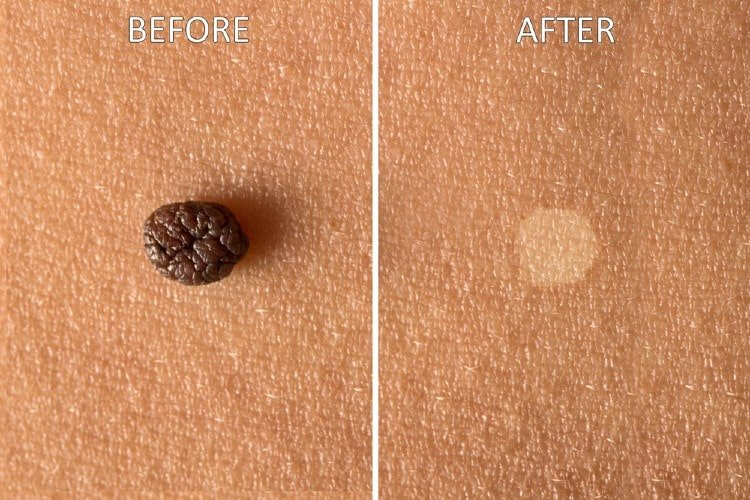
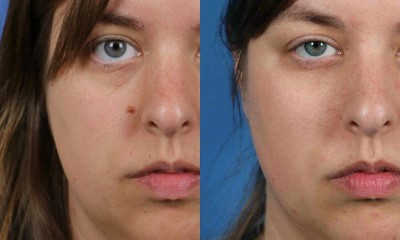
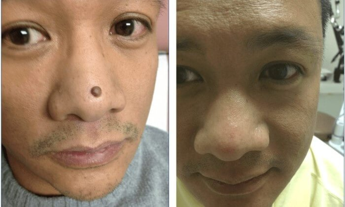
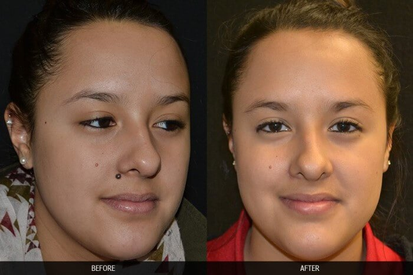
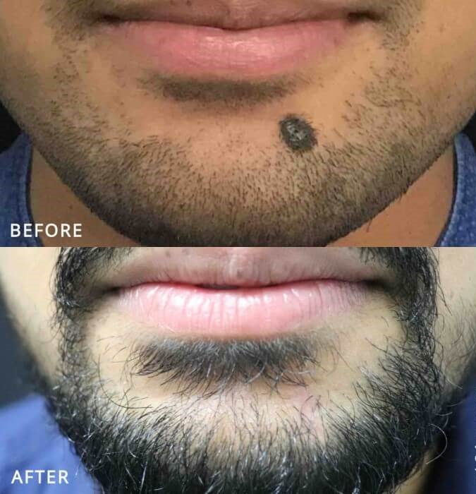

- Emma Fraser
It was the most watched episode in history when sisters Anna and Samantha Martin from won over the investor panel. Never before had the judging panel unanimously decided to each invest over a million dollars into a potential company.
After buying a staggering 25% share in the sister's company, the panel have personally mentored the pair, helping them undergo re-branding and re-packing of their miracle product.
Touting their discovery as “a great step forward in skin care history,” the judges were quick to offer up their hard earned cash to back the entrepreneurial pair. “We were shocked. The most we were hoping for was some advice…we weren’t even sure that we would manage to get any investors,” explained Samantha. After outstanding offers from each panel member, the sisters burst into tears.
The judges were amazed that one product was able eliminate all of the following:
- Skin Tags
- Dark Moles
- Light Moles
- Small Warts
- Big Warts
- Made From 100% All Natural and Organic Ingredients
“It didn’t feel real. The fact that all these successful, business-minded people wanted to be apart of Skincell and what we were doing was very emotional!” explained Anna.
The pair are the first contestants in the show’s long duration to ever receive a standing ovation and offers of investment from all five panel members. The sisters said they celebrated the success with champagne and cake when the episode wrapped.
 The sisters were the first contestants in TV history to receive investment offers from all five panel members.Since filming their episode, the sisters have been hard at work putting the advice of their mentors into play.
“We completely re-branded our company and came up with new packaging,” said Anna.
The pair recently unveiled the product that netted them millions of dollars in investments and made it for sale across The US.
“The product we displayed on the show has been rebranded into Skincell. It’s the revolutionary all-natural formula with a new name and packaging,” explained Samantha.
The sisters first launched the products for sale through their company website and say they sold out within 5 minutes.
“We even made sure we had more product than we thought we could sell, but all of it sold out within five minutes!” exclaimed Samantha.
While the investors are toasting to their smart business move, men and women across the United States are flocking online to purchase Skincell and say the results have been life-changing.
Clinical trials of Skincell have uncovered that both women and men who used the natural mole & skin tag remover were able to completely eliminate small and even large moles and skin tags, within as little as 8 hours!
After hearing such astonishing feedback regarding how effective this innovative new mole, skin tag and wart removing product was, we appointed our research department to conduct their own investigation into the skin tag miracle.
The vials of Skincell were delivered within a few days and I was really excited to try this all-natural formula. Skincell has the ideal dosage of the purest forms of Zincum Muriaticum and Sanguinaria Canadensis available to consumers. That's exactly why its users experience zero negative side effects. I put together this report that details my results:
Skincell formula has been scientifically proven to:
To test out the product, I applied Skincell to a fairly large mole I've had on my right cheek my entire life.
 Just 6 hours after applying Skincell to my mole, I was in awe by how quick and dramatic the effects were.
Within the first 3 hours the mole had completely scabbed over and was already starting to flake off by hour 5. The active ingredients of Skincell were truly miraculous.
I felt amazing by hour 6 when the entire mole had dried up into an ugly flake that literally fell right off of my cheek. All that was left behind was clear, smooth and natural toned healthy looking skin.
The best part of all was that I didn't have to do a single thing other than apply the Skincell directly on to my (now non-existent) mole. I always hated the idea of getting an expensive surgical procedure, not to mention I was terified of it! That is something I'll never have to worry about ever again!
Pretty much all of my friends have complimented me on how much better my face looks now! I know many people like to use the excuse that face moles are "beauty marks", but I feel way more beautiful without my "beauty mark". Not to mention, my husband has been commenting on how beautiful my face looks now as well. I even notice more men looking at me in a desirable sort of way at the grocery store.



Using The sister's mole & skin tag vanishing formula, I completely got rid of my mole and I've heard that it works just as well for skin tags and warts. Here at The Daily Reporting's offices, everyone could see the difference and we were all proud of me for trying something new and being rewarded for it!
There are countless health and skin gimmicks out there these days, and most of them are high in cost and low in giving you real results. So when we heard about the deal, we were skeptical — could this product really be that much better than everything else on the market? Seeing my results first-hand in our scientific case study — along with the investors always-valuable recommendation! — turned us from skeptics into believers. We can't deny it: This stuff really works and The Daily Reporting is happy to officially recommend it!
IMPORTANT! You won't find this offer for such big discounted bottles anywhere else on the internet! Get yours now!
Huge Discount: For a limited time, Anna and Samantha are offering our readers a discounted bottle of Skincell to celebrate their big investment. (available for a limited time while supplies last) can be claimed via the links below — exclusively for Entertainment Today daily readers!
"Trying to find natural solutions to my mole was a constant battle. Skincell got rid of my mole once a for all! Thanks so much!"
Bill Taylor
"For the first time in forever I wake up happy knowing my skin is free of moles and dark spots. I haven't felt this confident in a long time!"
Robert Smith
"I was very close to getting a surgical procedure done, my skin tag was very ugly and it was killing my confidence. Luckily I found Skincell and I got the same results as surgery, for way less!!!"
Christina Butler
"When I was In my 20's I hated my mole. As I got older I began to accept it, That is until I realized how easy it is to remove it! it wasn't until I found Skincell that I was able to completely get rid of my mole!"
Scott Johnson
"As a father of 2, I juggle work, kids, and all of life's other stresses on a daily basis. A friend of mine bought me Skincell and I am incredibly impressed with the results! I was complaining about how I couldn't afford surgery and didn't have time either to remove my skin tags! Now they're completely gone for good!"
Brian Taylor
(PROMOTIONAL PRICING FOR A LIMITED TIME ONLY - CLAIM YOURS NOW BEFORE THEY'RE ALL GONE)
IMPORTANT: It is recommended to apply product directly on the area of concern for best results.
Update: Bottles Still Available. Exclusive Promotion Still Available On:
Big Discount with our exclusive link:
Buy 2 Bottles Get 1
Free - Buy 3 Bottles Get 2 Free!
Tohloria Lewis
I have been using this product to get rid of all my skin tags, and I seriously am super impressed! My skin is clearer than ever! Confidence at an all time high.
Tanya Porquez
I saw Anna and Samantha presenting Skincell on CNN a while ago and am amazed at how well it worked for me. I've been able to get rid of 3 moles that I've had forever. Honestly, this is unbelievable, all I have to say is WOW.
Jennifer Jackson Mercer
A friend of mine used and recommended it to me 3 weeks ago. I ordered the product and received it within 3 days. The results have been incredible and I can't wait to recommend it to my friend that also has a few moles on her face.
Kristy Cash
I wish I knew about this product before I had surgery! It would have saved a heck of a lot of money!
Katy Barrott
I can't believe this is really free! I am very much pleased after using this product. I've gotten a TON of compliments as well :)
Amanda Gibson
I saw this on the news. How lucky am I to have been given this opportunity!?!?! Thank you for sharing this article! I just ordered my first bottle.
Julie Keyse
Probably I have more skin tags than most of you folks. But Skincell worked for me too! LOL! I can't say anything more exciting. Thanks for the inspiration!
Sarah Williams
My sister did this a few months ago, I waited to order my bottle to see if it really worked and then they stopped giving out the risk free trial! what a dumb move that turned out to be. glad to see the promotion is back again, I wont make the same mistake.
Kirsten Bauman Riley
I'm going to give this product a chance to work its magic on me. I've tried everything out there and so far nothing has been good enough to help me and I don't want to turn to surgery.
Celia Kilgard
worked for me! It worked just like I thought it would. It was easy enough and I just want others to know when something works.
Alanna 'martin' Payne
Thanks for the info, just started mine.
Alice Chang
Been so busy with the kids lately that I'm never able to find deals like this. I'll give it a shot!
Mark Fadlevich
Always impressed with the deals you guys dig up, got my bottle. Can't wait to see what you've got lined up next week.
Ashley O'Brien Berlin
Yes this stuff is amazing! My best friend Gina uses this, I've been trying for years to get rid of my moles and nothing was helping. You alerted me to the possibility of achieving my goals, which is looking and feeling great for my daughter's wedding. I just ordered my first bottle and I have a very good feeling about it!!
Amanda Hickam
Hey Christine, i just placed my order. I can't wait to get my Skincell!! Thanks, Aimee xoxoxo.
Brittany Jackson
My mom just e-mailed me this, a friend at work had told her about it. i guess it works really well
Shellie Wilson Hodge
Telling all my friends about this, thanx for the info
Jill Phongsa
wasn't sure about ordering online but this deal seals it for me, didn't want to miss out. checked out the pages and all is encrypted and good. looking forward to my new looks
Molly Murley Davis
I've gone ahead and ordered my bottle. I can't wait to get started and see what happens.
Jenna Ponchot Bush
As a realtor it's important to look and feel my best, unfortunately the housing market isn't doing that great so cash has been a little tight lately. Thanks for the info, looking forward to receiving my bottle.
Laura Kelch Miranda
I have tried so much of this kind of stuff, in one sense I want to try it but in the back of my mind I am thinking, yeah right!! Someone please reassure me it works.
Sara Bergheger
I tried the bottle thing a while ago and it worked pretty good.
Lauren Kirschenbaum Silver
For once I was able to do something nice for myself without feeling guilty about the cost. Can't beat that deal.
Gotmy Mindframe Right
Had no idea you could get results like this.